SQL Practices
Based on notes by David G. Sullivan
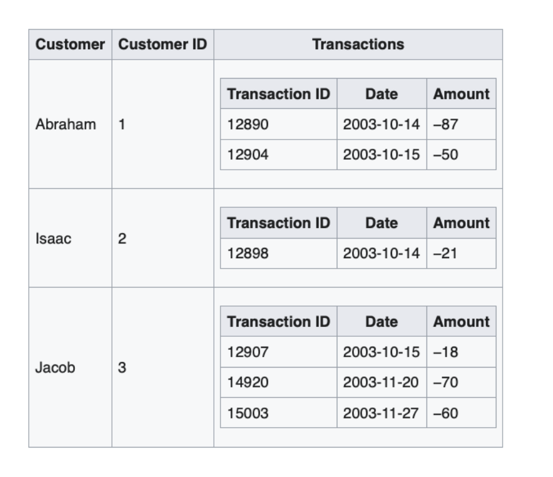
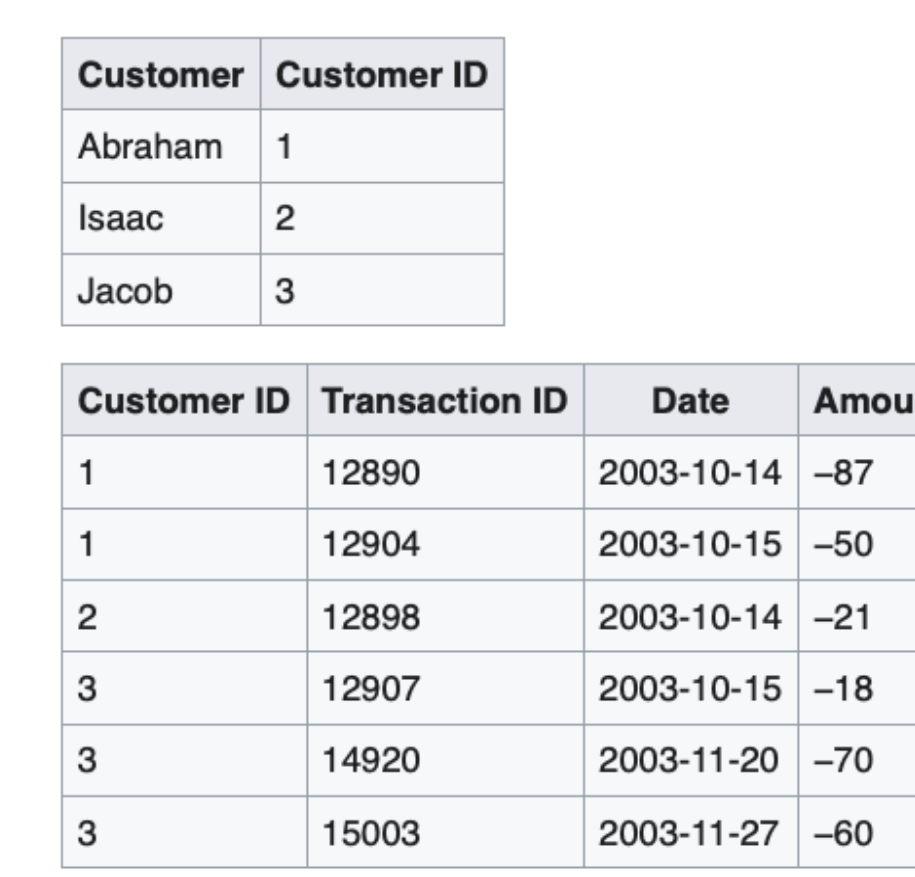
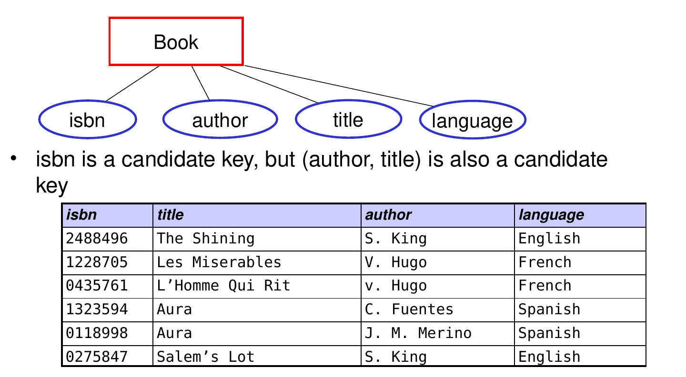
Assume each author only writes in one language
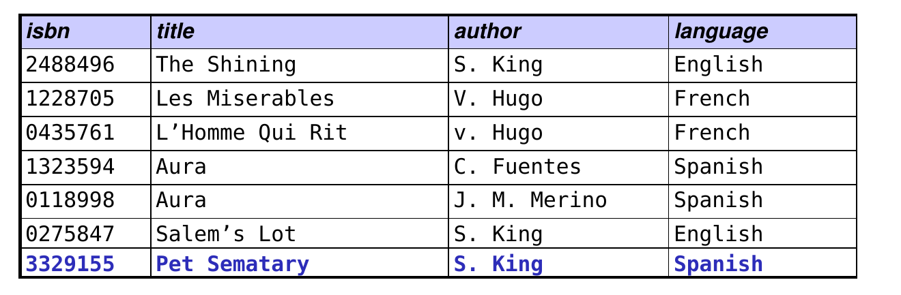
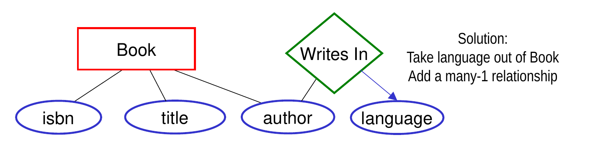
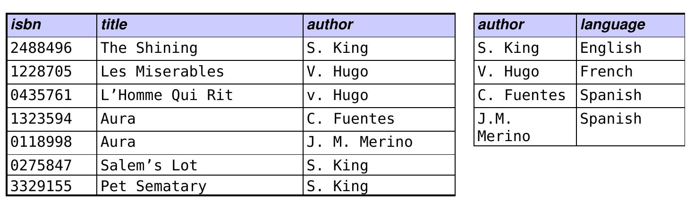
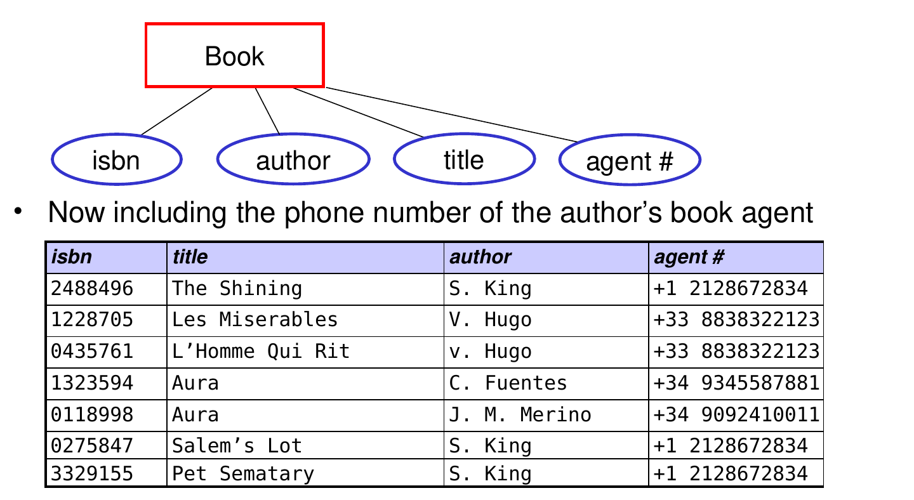
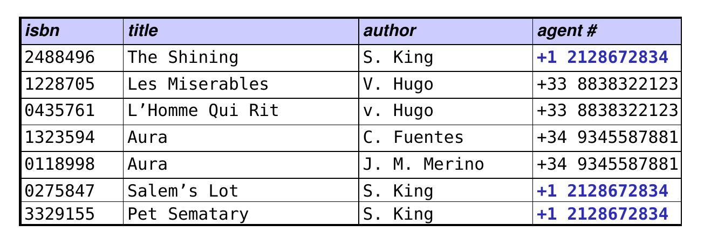
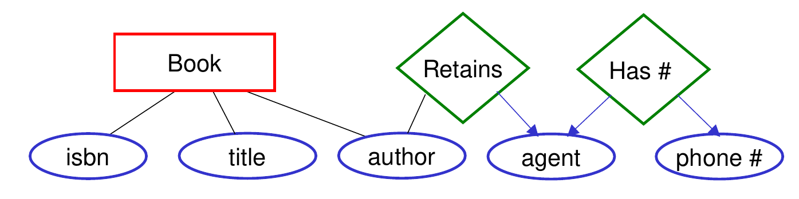
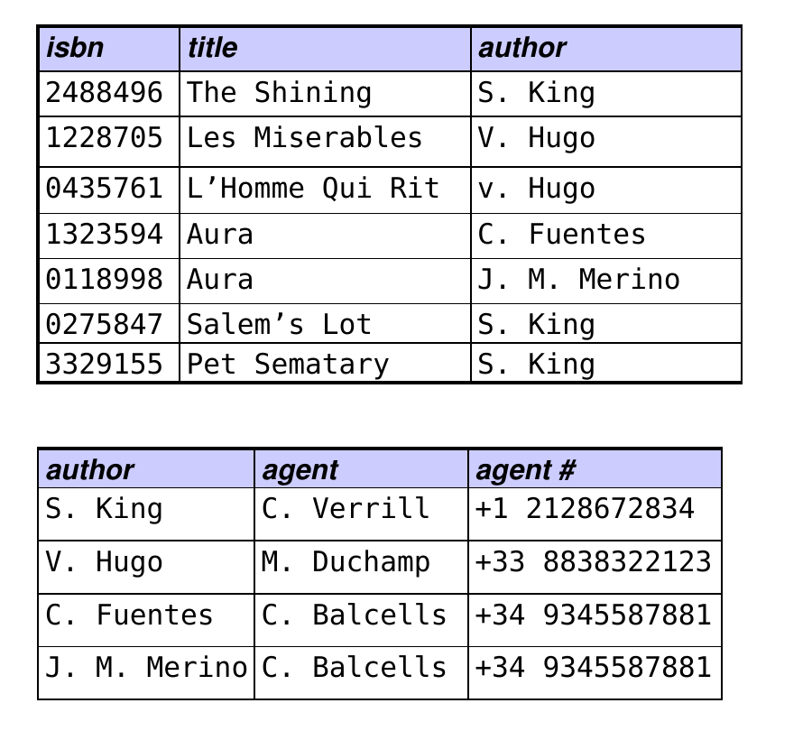
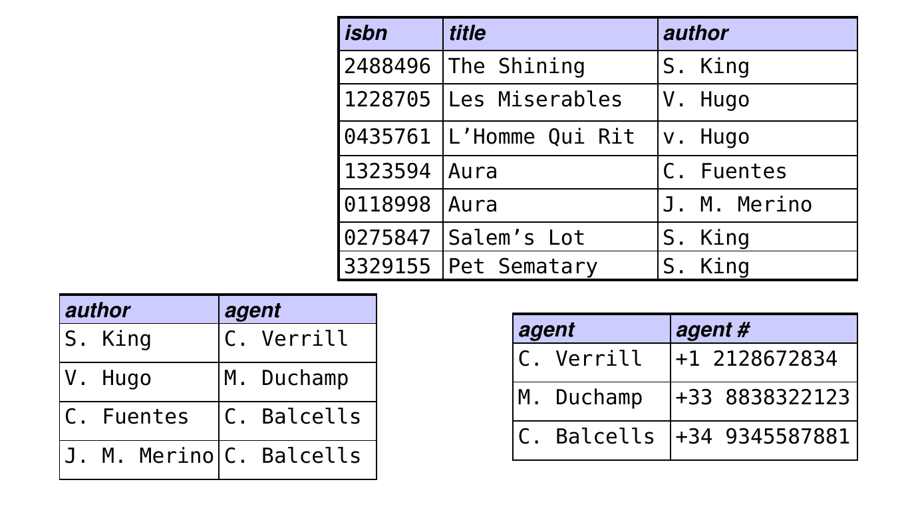
A. ('4567 ', 'Robert Brown ')
B. ('4567 ', 'Robert Brown')
C. ('4567', 'Robert Brown ')
D. ('4567', 'Robert Brown')B is correct — CHAR(8) pads the id with spaces; VARCHAR(30) does not pad.
('Robert B', '4567') would be stored
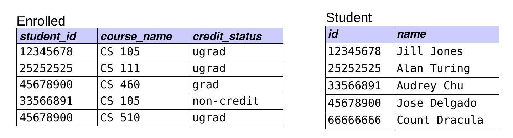
① INSERT INTO Enrolled VALUES('4567', 'CS 105', 'grad');
② INSERT INTO Student VALUES ('4567', 'Robert Brown');
A. ① must come before ②
B. ② must come before ① ← correct why? referential integrity!
C. the order of the two INSERT commands doesn’t matter
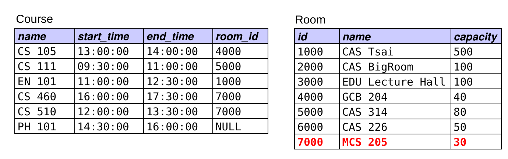
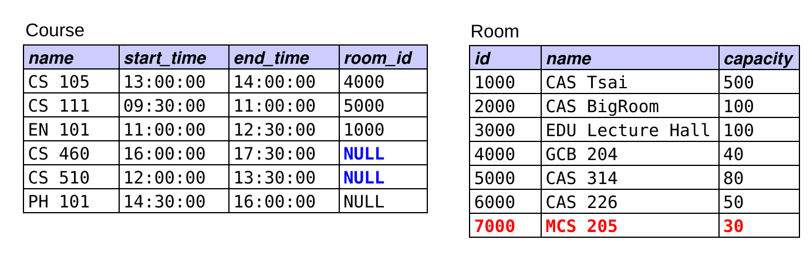
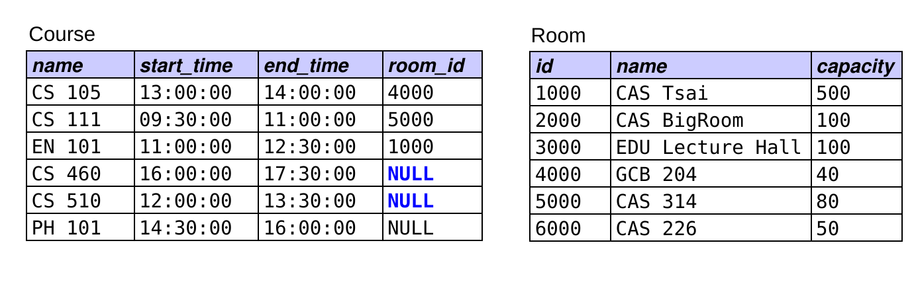
A. DELETE FROM Room WHERE id = '7000';
B. DELETE FROM Room WHERE id = '7000';
UPDATE Course SET room_id = NULL WHERE room_id = '7000';
C. UPDATE Course SET room_id = NULL WHERE room_id = '7000';
DELETE FROM Room WHERE id = '7000'; ← correct
D. two or more of the above would work
SELECT name
FROM Student
WHERE id NOT IN (SELECT student_id
FROM Enrolled
WHERE course_name = 'CS 105');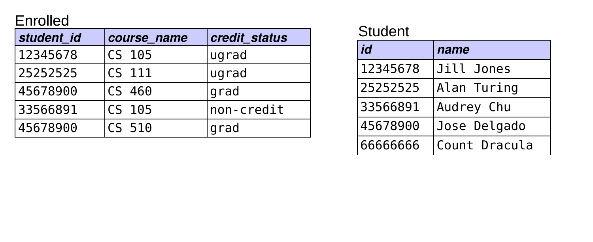
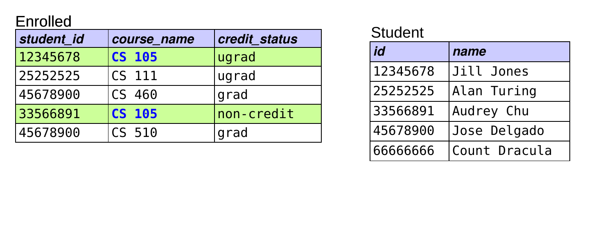
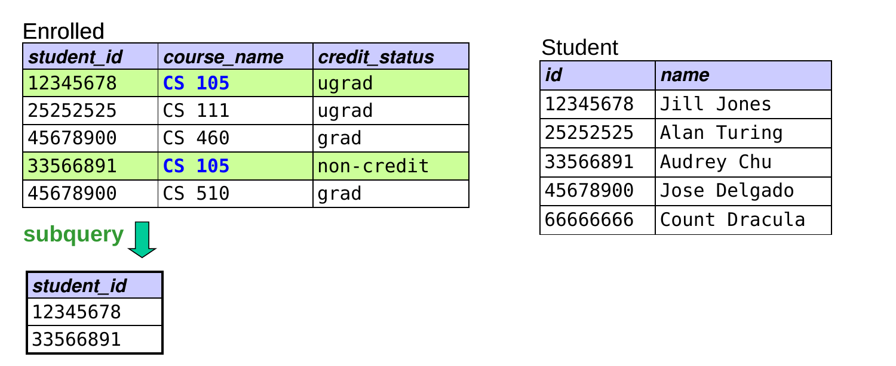
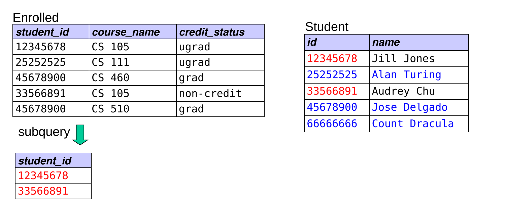
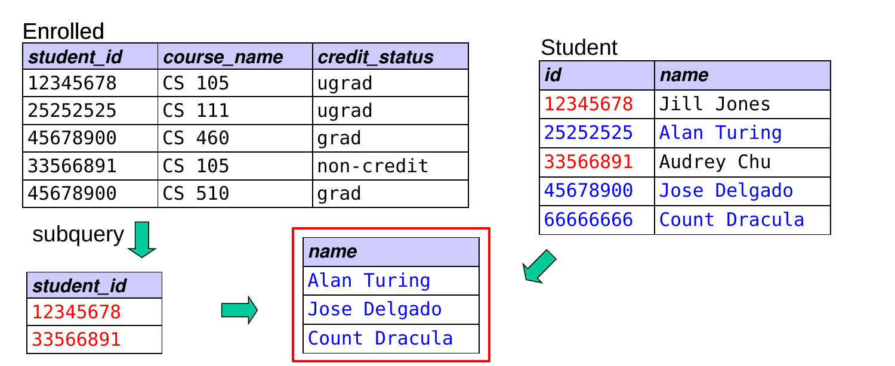
Person(id, name, dob, pob)
Movie(id, name, year, rating, runtime, genre, earnings_rank)
Actor(actor_id, movie_id) Director(director_id, movie_id)
Oscar(movie_id, person_id, type, year)1) Find the names of people in the database who acted in Avatar.
Person(id, name, dob, pob)
Movie(id, name, year, rating, runtime, genre, earnings_rank)
Actor(actor_id, movie_id) Director(director_id, movie_id)
Oscar(movie_id, person_id, type, year)2) How many people in the database did not act in Avatar? Will this work?
Person(id, name, dob, pob)
Movie(id, name, year, rating, runtime, genre, earnings_rank)
Actor(actor_id, movie_id) Director(director_id, movie_id)
Oscar(movie_id, person_id, type, year)3) How many people in the database who were born in California have won an Oscar? (assume pob = city, state, country)
Person(id, name, dob, pob)
Movie(id, name, year, rating, runtime, genre, earnings_rank)
Actor(actor_id, movie_id) Director(director_id, movie_id)
Oscar(movie_id, person_id, type, year)4) Find the ids and names of everyone in the database who has acted in a movie directed by James Cameron. (Hint: One table is needed twice!)
Person(id, name, dob, pob)
Movie(id, name, year, rating, runtime, genre, earnings_rank)
Actor(actor_id, movie_id) Director(director_id, movie_id)
Oscar(movie_id, person_id, type, year)5) Which movie ratings have an avg runtime greater than 120 min, and what are their average runtimes?
Person(id, name, dob, pob)
Movie(id, name, year, rating, runtime, genre, earnings_rank)
Actor(actor_id, movie_id) Director(director_id, movie_id)
Oscar(movie_id, person_id, type, year)6) For each person in the database born in Boston, Mass, find the number of movies in the database (possibly 0) in which the person has acted. You may assume that names are unique.
Student(id, name) Department(name, office) Room(id, name, capacity)
Course(name, start_time, end_time, room_id) MajorsIn(student_id, dept_name)
Enrolled(student_id, course_name, credit_status)1) Find the names of all courses taken by comp sci majors.
2) Find the number of students majoring in each department. (The result should be tuples of the form (dept name, # students).)
Student(id, name) Department(name, office) Room(id, name, capacity)
Course(name, start_time, end_time, room_id) MajorsIn(student_id, dept_name)
Enrolled(student_id, course_name, credit_status)3) Find the names and ids of all students who have a course in GCB 204.
4) Find the names of all rooms in which one or more CS courses meet.
Student(id, name) Department(name, office) Room(id, name, capacity)
Course(name, start_time, end_time, room_id) MajorsIn(student_id, dept_name)
Enrolled(student_id, course_name, credit_status)5a) Find the number of CS majors enrolled in CS 105.
5b) Find the number of CS majors enrolled in a course.
Student(id, name) Department(name, office) Room(id, name, capacity)
Course(name, start_time, end_time, room_id) MajorsIn(student_id, dept_name)
Enrolled(student_id, course_name, credit_status)6) Find the number of majors that each student has declared.
Student(id, name) Department(name, office) Room(id, name, capacity)
Course(name, start_time, end_time, room_id) MajorsIn(student_id, dept_name)
Enrolled(student_id, course_name, credit_status)7) For each department with more than one majoring student, output the department’s name and the number of majoring students.
Person(id, name, dob, pob)
Movie(id, name, year, rating, runtime, genre, earnings_rank)
Actor(actor_id, movie_id) Director(director_id, movie_id)
Oscar(movie_id, person_id, type, year)A. finding the Best-Picture winner with the best/smallest earnings rank
B. finding the number of Oscars won by each person that has won an Oscar
C. finding the number of Oscars won by each person, including people who have not won any Oscars
D. both B and C, but not A ← correct: B and C need computations for multiple subgroups
E. A, B, and C
Which would require a subquery? A
Which would require a LEFT OUTER JOIN? C
Person(id, name, dob, pob)
Movie(id, name, year, rating, runtime, genre, earnings_rank)
Actor(actor_id, movie_id) Director(director_id, movie_id)
Oscar(movie_id, person_id, type, year)1) Find the Best-Picture winner with the best/smallest earnings rank. The result should have the form (name, earnings_rank). Assume no two movies have the same earnings rank.
Hold off on 2 and 3 for now!